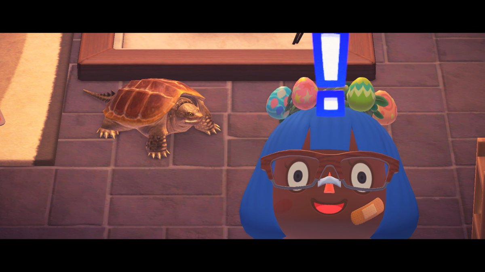
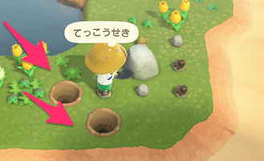
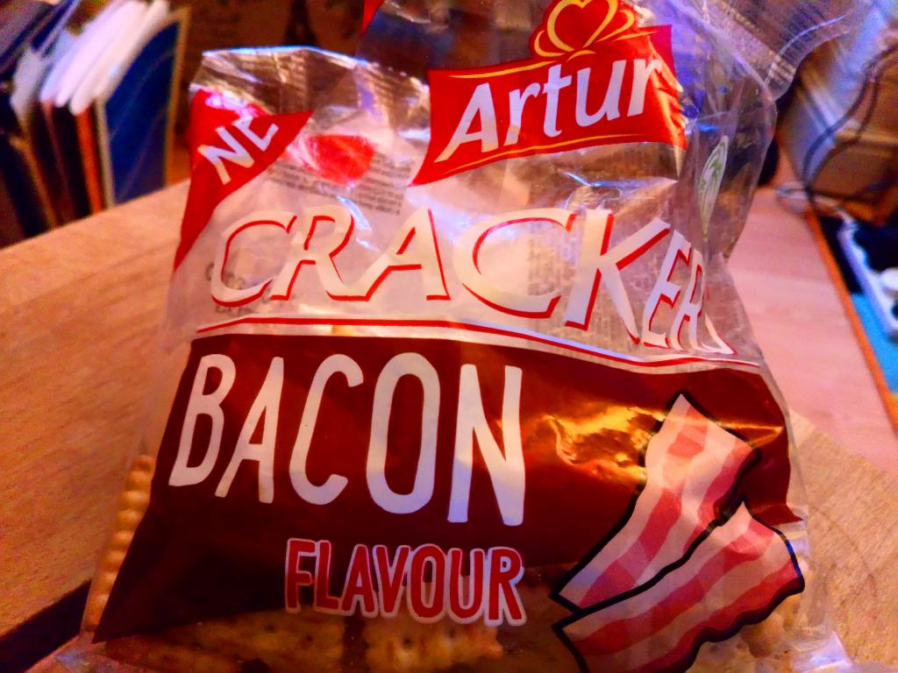
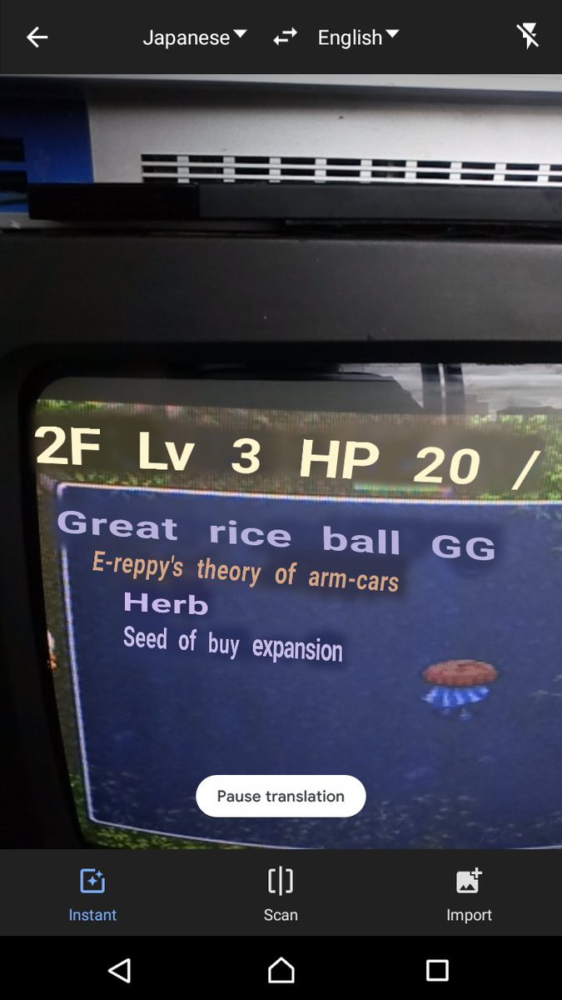
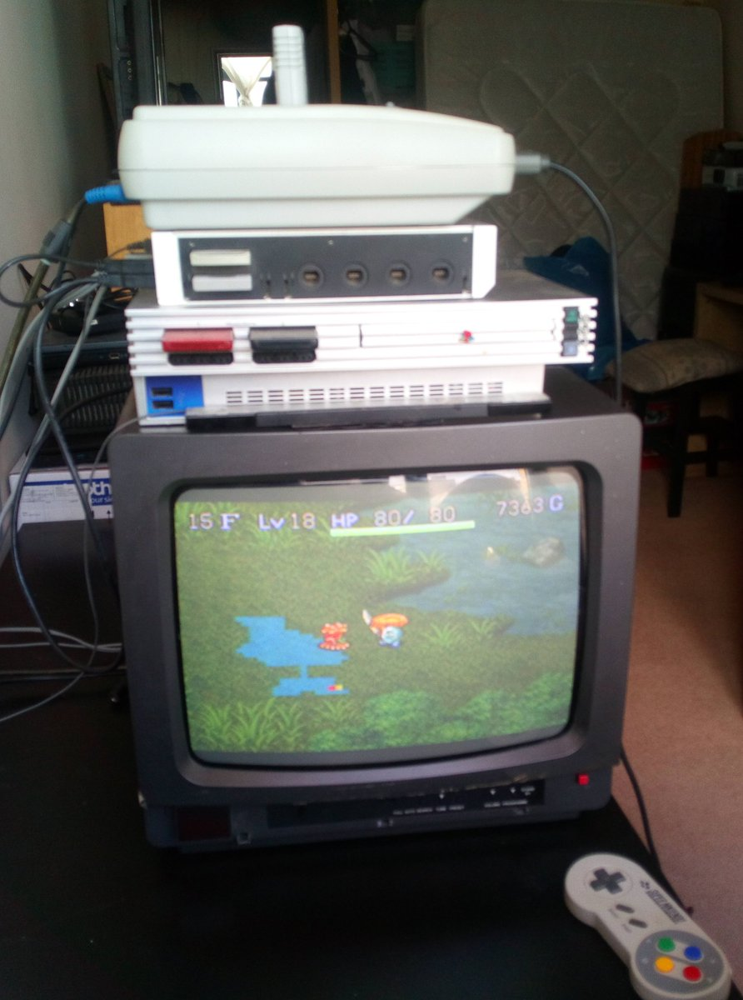
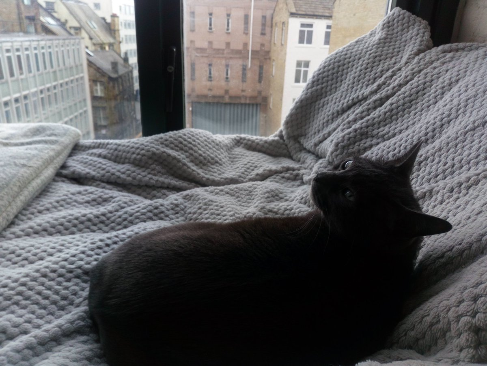
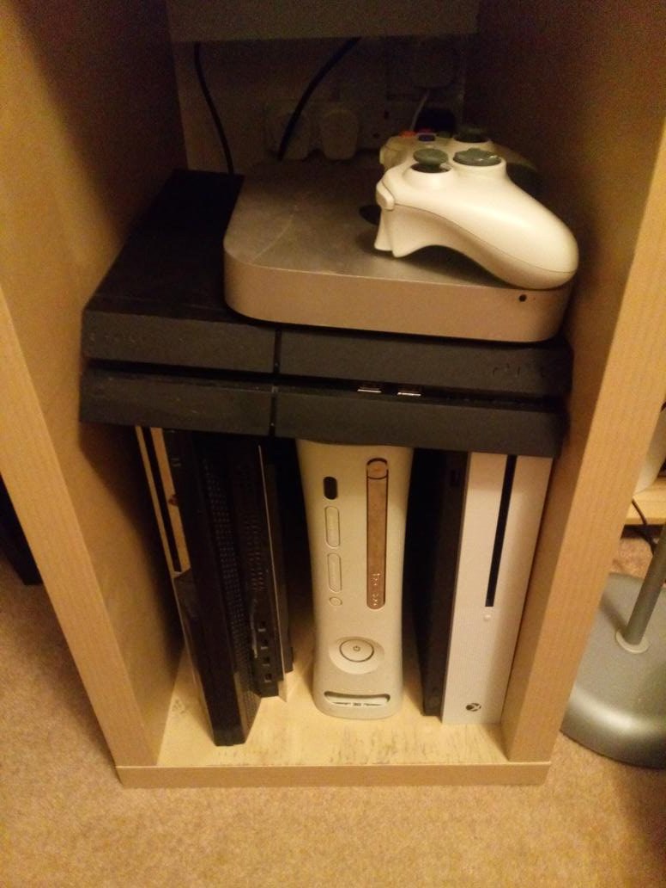

I am really disgusted by the amount of jokes about guillotines.
Once again I need to remind everyone that the guillotine is a dirty French invention and in this country we use the Wicker-Man.
A guarantee of a bountiful harvest and a great day out for the kids.
@magic_bane sculptris?
shi has been hoarding #AnimalCrossing #ACNH #NintendoSwitch

@johnmclear @ghalfacree @johnleach The builds on http://snapcraft.io are quite fast, I uhm, lazily, just kept pushing config changes to git and letting it rebuild. :)
and yeah docs are bad/old best bet is finding other peoples snapcraft.yaml files. eg https://github.com/xriss/gamecake/blob/master/snap/snapcraft.yaml but mine is mostly hardware hacks.
https://twitter.com/ghalfacree/status/1245695283167662080 @ghalfacree @johnleach @johnmclear yup I don't think postgres is a problem the only other gotcha I've found with snaps is how the raspberry pi, eg Raspbian, does not like them. Although, presumably, that will change in the future.
Which is a big shame as snaps make arm builds easy.
@johnmclear Snaps seem a lot easier to keep up to date from a publishing point of view. I tried and gave up with deb and ppa after I failed to update them regulary. Snaps are mostly painless once you get them working :)
The only downside with snaps is if you have to fight the sandboxing.
I only subscribe to project gutenberg for the pictures. https://twitter.com/gutenberg_new/status/1245491159289356290
never go full donkey https://t.co/Y8xodzgcXe
who seeks minerals should start by digging two graves

I found your crackers @arturcz

@ekoner Probably I'm not to sure how Popular Shiren is in Japan but it is part of a very popular series of games that is usually themed with other IPs, such as dragon quest or pokemon.
There are lots of Shiren games only available in Japan so still kinda obscure in the west.
@ekoner Ah, "Shiren The Wanderer" SNES so Japanese only. The second in the "Mystery Dungeon" series of which there are many, but it's the best one :)
@ekoner A dusty collection of old consoles?
https://twitter.com/wetgenes/status/1244634808673763333 On a whim I figured I would try Google translate camera magic thingy on the snes screen and it only bleeding works. You have no idea how much easier this makes the game.

This is the view from the window.

Built a daybed with a view by the window, for the cat, obviously.

https://twitter.com/MartinCaine/status/1244535486628192256 @MartinCaine I think there has to be a market for a graphics card attachment that takes the exhaust and blows it over your keyboard and mouse.
I'm going to create it and call it gamer ducts so it can sell on amazon next to the yellow game glasses.
How do you stack yours?
